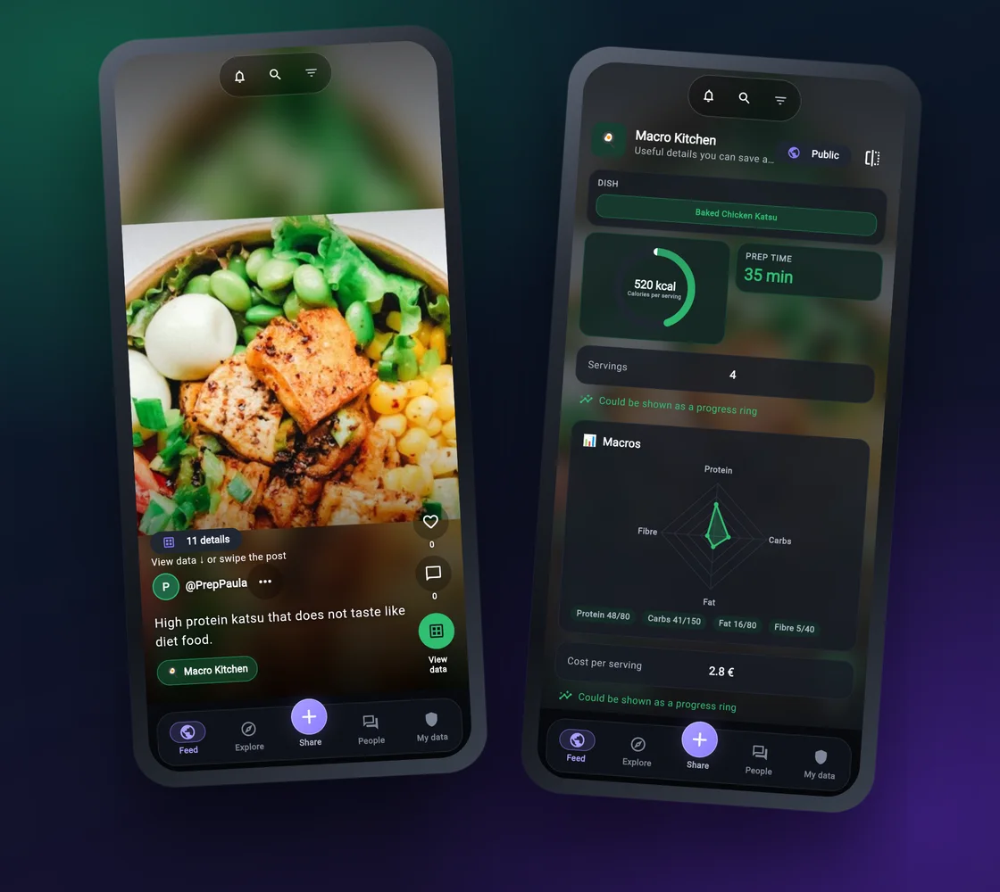
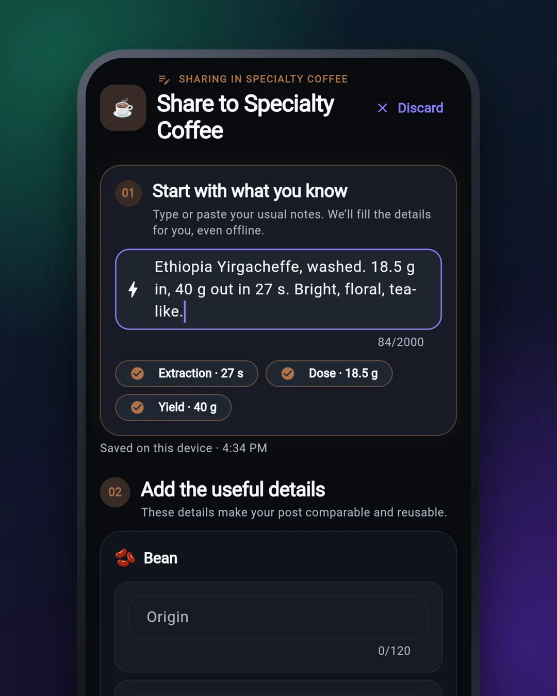
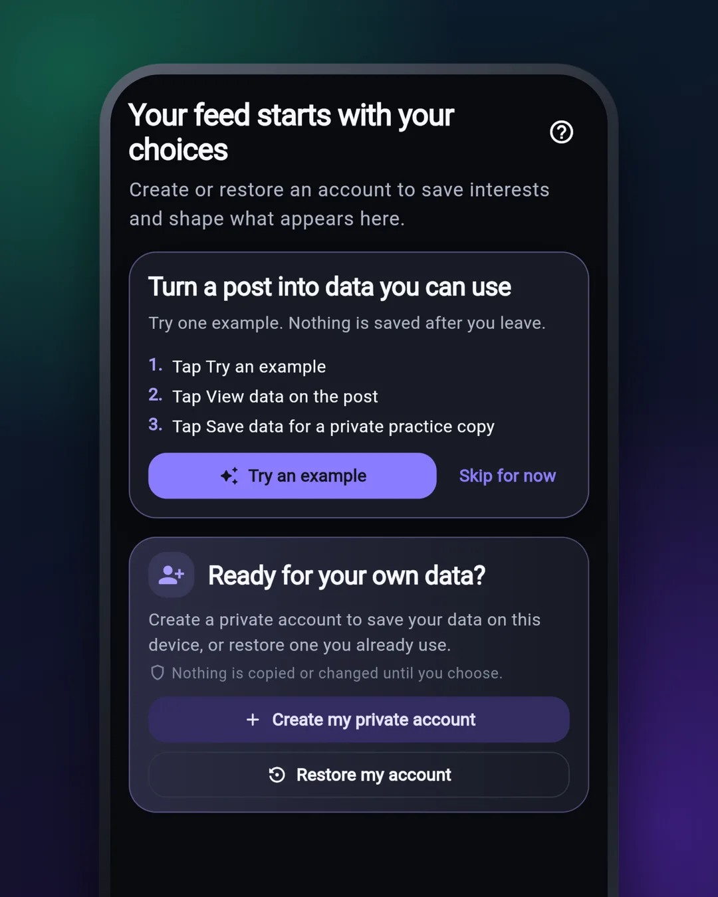
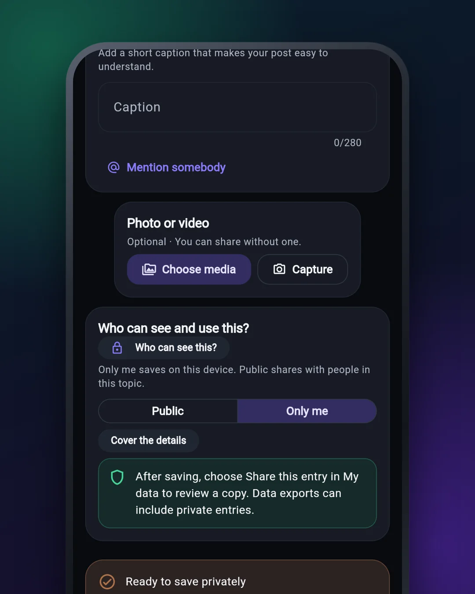

For Android · No ads · No sign-up
Track what you care about. Keep it on your phone.
A private journal for the things you measure — coffee, workouts, meals, plants, anything. Every entry keeps its numbers, so you can look back and compare. You share an entry only when you choose to.
- No email or password
- Works offline
- You choose who sees each entry

On its own, from the first minute
Write it down your way. The numbers stay numbers.
You don't need anyone else to get value out of the app. Everything below works on a single phone, offline, with nothing sent anywhere.
-
Type your usual notes
Write "18 g in, 40 g out in 27 s" the way you always do. The app picks out the numbers and fills in the fields for you — on your phone, even offline.
-
Your own fields
Make a topic for what you track and choose its fields once: grams, minutes, reps, a rating. Every entry after that has the same shape.
-
Photos with their numbers
Add a photo if you like. Tap it, or tap View data, and the picture turns over to show the numbers behind it.
-
Look back and compare
The data library searches, filters and sorts every entry as cards, a table or a timeline. Data helpers turn saved readings into a number, a trend or an alert.
-
Bring in what you have
Values already in another app? Pick a screenshot and the app reads the numbers on the phone. Older records in a spreadsheet? Import the .csv file and review it first.
-
Try it first
On first start, Try an example walks you through one post in three taps. Nothing from the example is kept after you leave it.

Notes become data
Three values recognised from one sentence, ready to check before you save.

Try it before you start
One example post, three taps, nothing kept. Then create your private account — no email needed.

Only me, or Public
You pick for every entry. Only me never leaves the phone.
Your data
It stays on your phone. That is the whole idea.
There is no account on a server, nothing is uploaded in the background, and there are no ads or analytics. Sharing is a separate decision, every time.
-
Stored on this phoneYour entries, drafts, messages and keys live in a database on your phone. The app works fully offline.
-
No email, no passwordYour private account is a key created on your phone. Nothing to register, and nobody holds a copy of your data for you.
-
Nothing in the backgroundAn entry leaves only when you share it, and only to where you sent it: a phone nearby, or a community you joined.
-
Sealed for one personA private message or an entry you send to one person is sealed to that person, so a community service carrying it cannot read it.
-
No ads, no analyticsNo advertising identifier and no analytics library. Reading numbers from a screenshot happens on the phone.
-
Delete it allDeleting your account erases everything on this phone: entries, messages, keys. Copies other people already received are theirs, and the app tells you so.
Two things to know before you make anything Public: photos and videos you publish can be fetched by anyone who has their link, and a community service keeps what it was given. The privacy policy says what can leave your phone and why, and how to delete your data.
Questions
Good to know
Why is my Feed empty after installing?
Because nothing is built in. The app does not come with a community, so at first your Feed shows only your own entries. Join a community with an invitation from its organiser, share with someone nearby — or simply keep a private journal, which works without either.
What is a community service, and do I need one?
It is a small online database that a community runs for its members, so people who are not in the same room can see each other's Public entries. You only need one for that. Joining one, or running your own takes a few minutes.
Who can see my entries?
You choose for each entry. Only me stays on your phone. Public goes to the people in that topic — through the community you joined, or to phones nearby. Changing a topic never publishes entries you saved privately.
What if I lose or change my phone?
Prepare while you have it. Under My data → Tools, keep your recovery words safe (Account access) and save a data copy (Copy or restore). The copy holds your entries, topics, the messages you wrote and your settings. Photos and videos attached to entries are not in it, so keep those in your gallery.
What does it cost?
Nothing. There are no ads, no subscription and no in-app purchases.
Which phones does it run on? Is it in German?
Android 7.0 or newer. There is no iPhone version. The app is in English for now.
I track things with a home server or sensors. Can those add entries?
Yes, with a small connector program you run on a computer at home. You approve which topic and fields it may fill, and for how long. See Connect a tool or machine.
Who makes this, and how do I reach you?
Zero Trust Software, an independent developer. Inside the app, Help & guide → Contact support opens an email to us; you can also open an issue on GitHub (please keep personal details out of public issues).
Your data stays on your phone.
No ads, no sign-up. Record the things you actually track, and share them with people you choose.